先用新库练习，Owner 确认企业、账号与内容后再验收真实业务。手机阅读说明，点图片放大桌面原图。
应用 1.1.9 · 1464 × 895 · 缩放 100%
来源 77265ff876fbdfb32d1f5c56433590966bec8cd3
首次进入新库
从 Start-Pilot.cmd 启动并核对 I 身份。空库点击右上角“创建企业资料”，填写企业名称和简称。
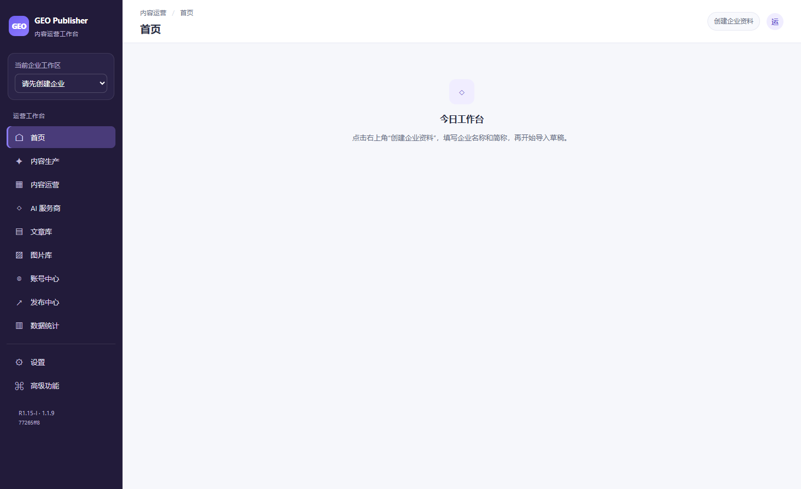
打开桌面原图 / 放大阅读
导入字段与预览
在内容运营的批量导入页选择模板，核对企业和字段映射；向下滚动检查行预览，再选择 Import as Draft。不会创建发布任务。
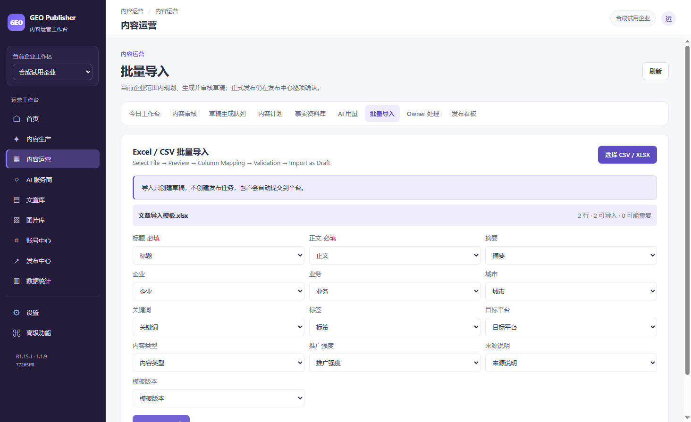
打开桌面原图 / 放大阅读
逐行校验错误
合成问题文件有四行错误，零行可导入。下方显示缺失标题、企业不匹配和正文等原因；修改文件后重新预览。
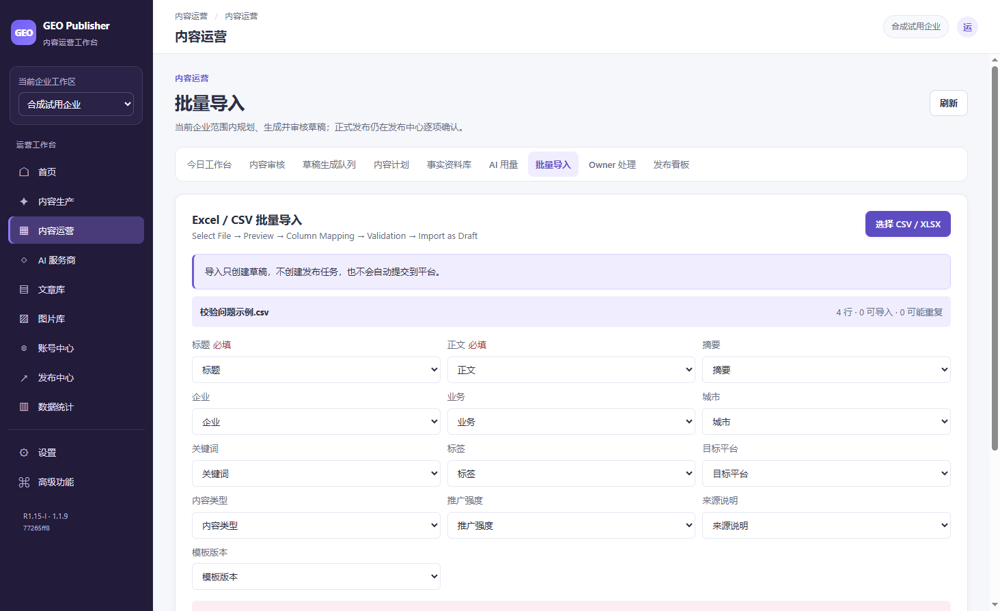
打开桌面原图 / 放大阅读
编辑与自动保存
在文章库点“修改”，等待“已保存”。重开后明确恢复上次编辑；提交工作副本后仍需重新审核。
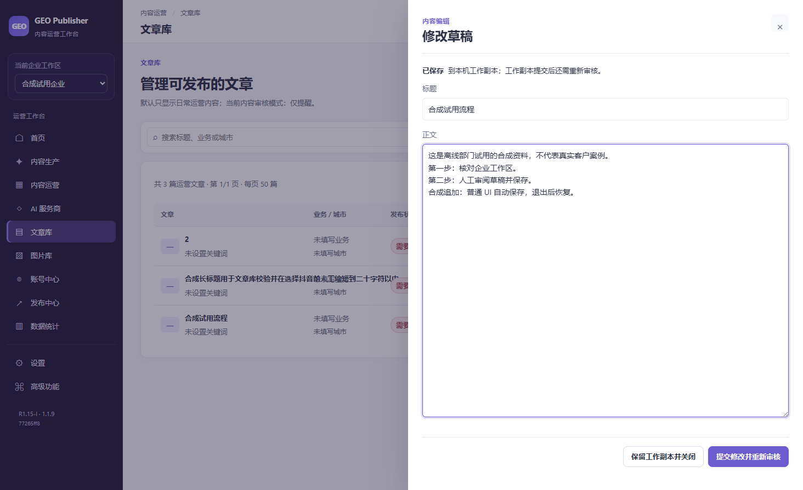
打开桌面原图 / 放大阅读
人工审核后的文章
仅一条合成流程经过本次人工审核。另两条仍需处理；“可发布”表示内容层状态，账号与平台门禁仍需逐项核对。
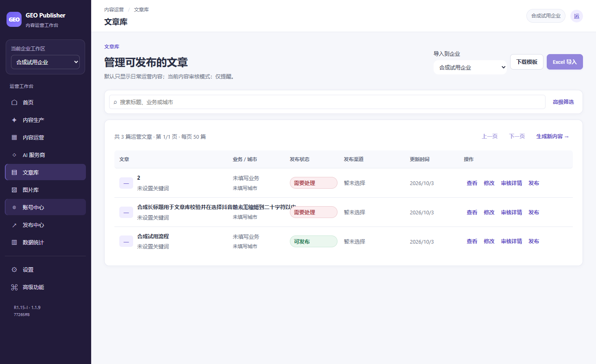
打开桌面原图 / 放大阅读
无账号时的发布保护
新库没有已验证账号，开始发布按钮不可用。本轮没有准备远端草稿、媒体上传或最终提交。
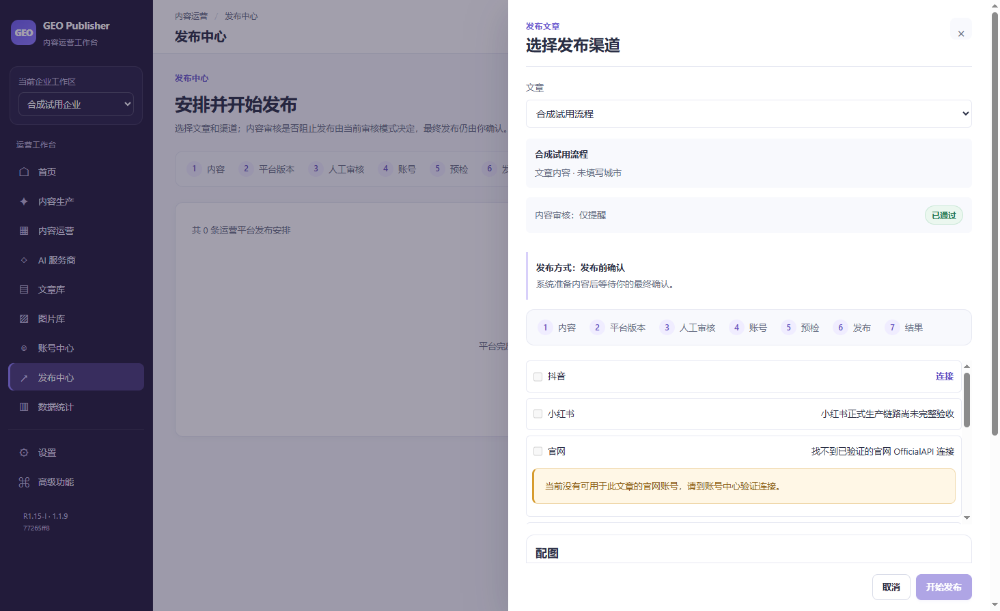
打开桌面原图 / 放大阅读
AI 服务商未配置
现有服务商预设可见，API Key 为空，没有保存或测试连接。今晚不产生 GEO 外部 AI 请求。
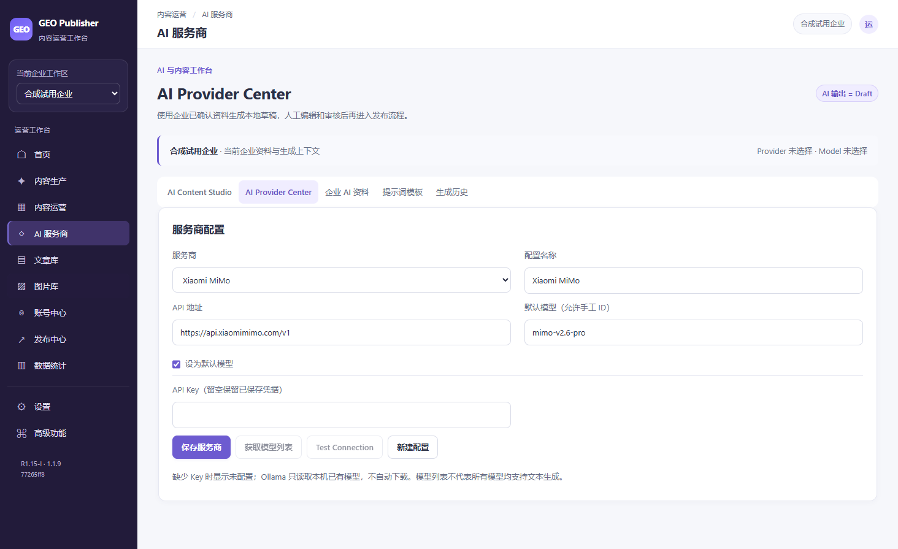
打开桌面原图 / 放大阅读
账号中心的新库状态
当前企业没有账号。正式凭据只能由 Owner 后续从安全入口配置，不能继承或复制历史测试凭据。
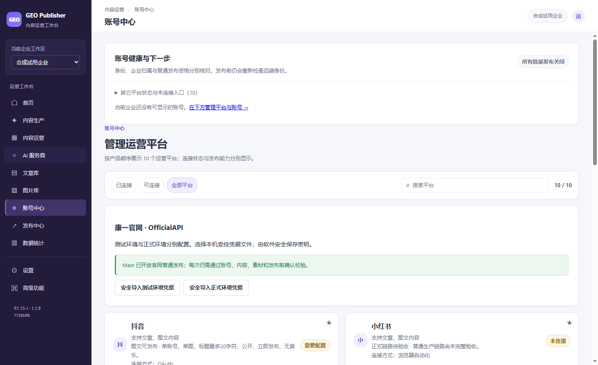
打开桌面原图 / 放大阅读
今日工作台
合成资料的待审与已审状态可见；没有可信账号检查结果。首页计数不能替代真实平台验收。
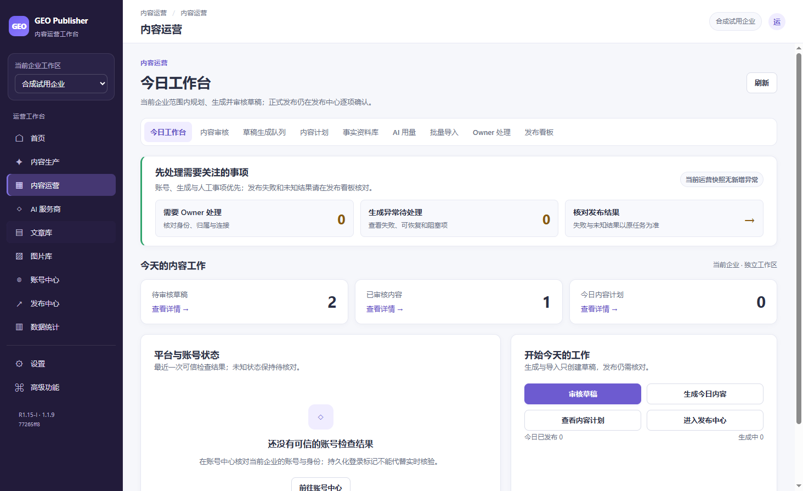
打开桌面原图 / 放大阅读
Owner 处理入口
当前新库处理项为零。页面下方 H 交付清单是历史待核对记录，不能当作这个空库已经绑定了历史账号。
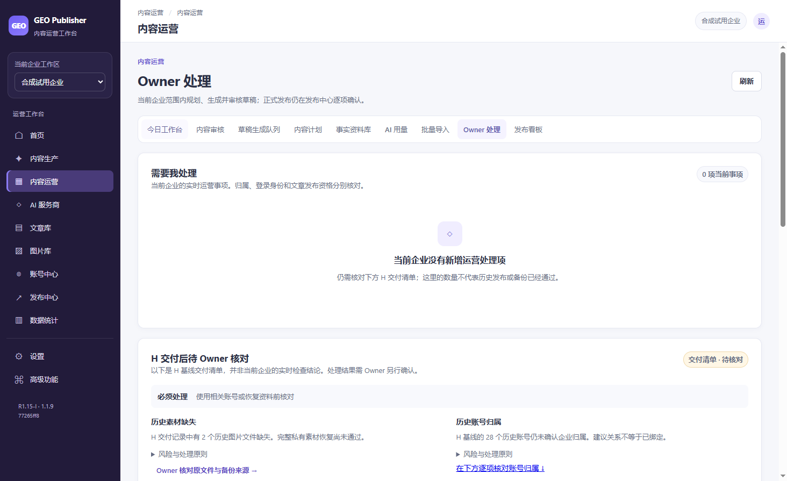
打开桌面原图 / 放大阅读
确认当前版本
在设置展开“构建与数据版本详情”，核对 R1.15-I、1.1.9 和 SOFTWARE.json 中的源码标识。main 仍为 H Candidate。
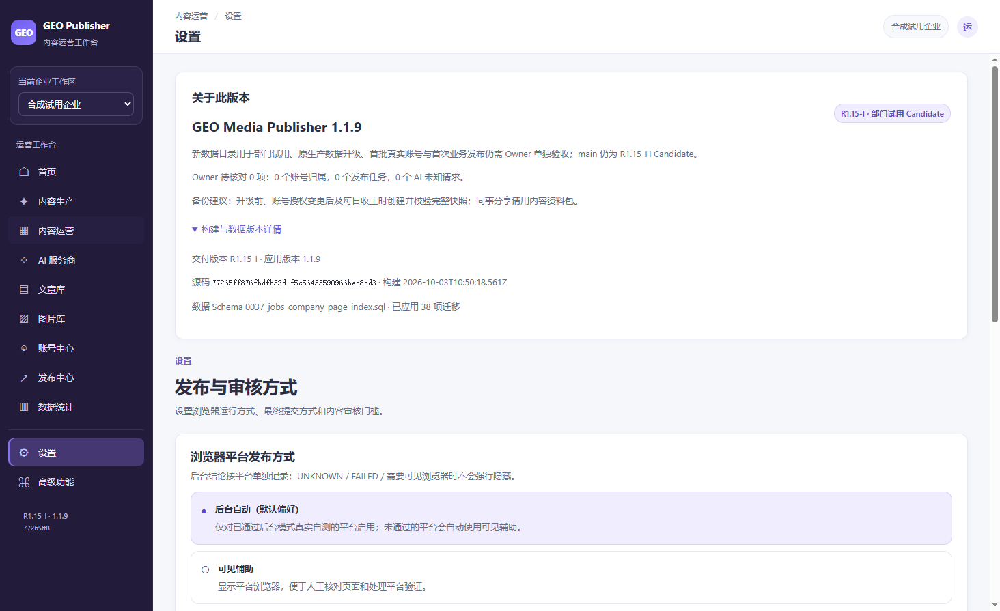
打开桌面原图 / 放大阅读
创建完整新库快照
此图拍于创建前。实际 UI 随后正常关闭、生成 Complete 快照、校验并恢复到另一隔离目录；恢复后自动执行保持关闭。
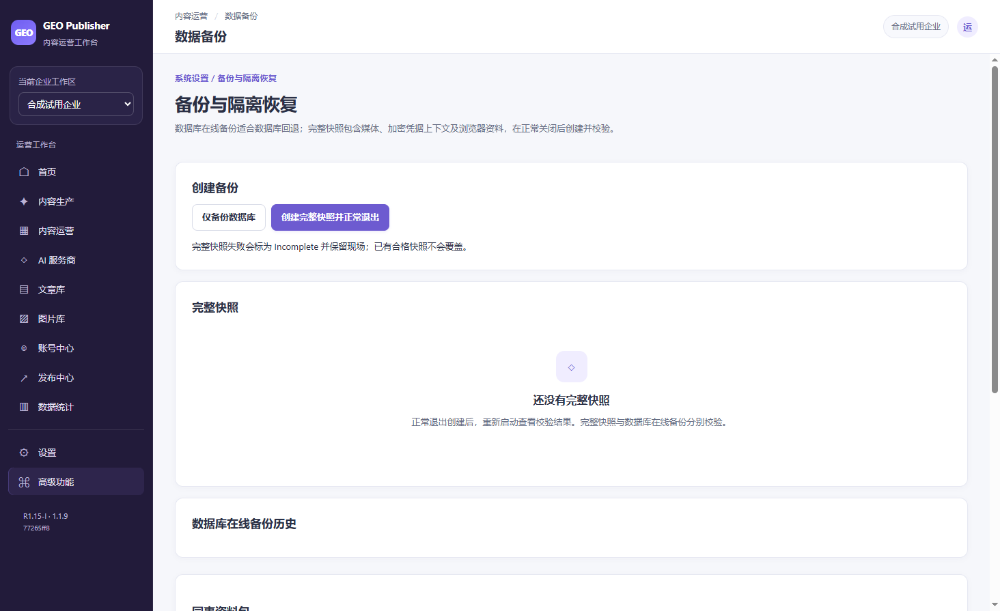
打开桌面原图 / 放大阅读
结果未知的只读演示
SIMULATED：内存只读夹具展示 Unknown 和历史状态。真实数据库没有发布任务或记录，不代表真实平台通过；未知结果不可重发。
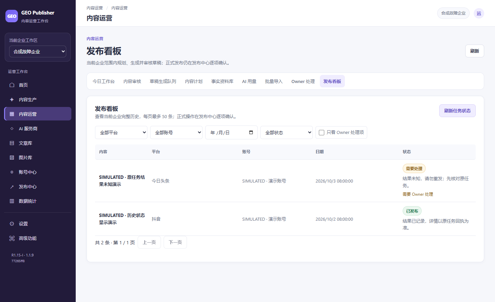
打开桌面原图 / 放大阅读